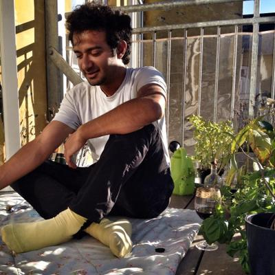

New Perspectives on Bias and Discrimination in Language Technology
4th & 5th of November, 2024 @University of Amsterdam
Workshop
One of the central issues discussed in the context of the societal impact of language technology is that machine
learning systems can contribute to discrimination, for instance by propagating human biases and stereotypes.
Despite efforts to address these issues, we are far from solving them.
The goal of this workshop is to bring together researchers from different fields to discuss the state of the art
on bias measurement and mitigation in language technology and to explore new avenues of approach. For more
information, read our Call for Abstracts.
This workshop is organized by Katrin Schulz, Leendert van Maanen, Jelle Zuidema, Oskar van der Wal and Dominik
Bachmann as part of the project “The biased reality of online media - Using stereotypes to make media
manipulation visible”, which is financed by the Dutch Research Council (NWO). In this project we integrate
knowledge from AI, psychology and linguistics to develop measures for social biases in language models and humans,
and then to use these to study the influence of our media consumption on our beliefs.
Vera Neplenbroek, Arianna Bisazza and Raquel Fernández: MBBQ: A Dataset for Cross-Lingual Comparison of Stereotypes in Generative LLMs
11:45
Beatrice Savoldi, Jasmijn Bastings, Luisa Bentivogli and Eva Vanmassenhove: A Decade of Gender Bias in Machine Translation
12:15
lunch
13:45
keynote 2: John Lalor
15:00
☕ coffee
15:30
Flor Miriam Plaza del Arco, Amanda Cercas Curry, Alba Curry, Gavin Abercrombie and Dirk Hovy: Angry Men, Sad Women: Large Language Models Reflect Gendered Stereotypes in Emotion Attribution
16:00
Hellina Hailu Nigatu and Zeerak Talat: A Capabilities Approach to Studying Bias and Harm in Language Technologies
16:30
poster session with drinks
18:00
end of day 1
Tuesday, 5th of November (click to expand)
09:00
doors open, coffee
10:00
keynote 3: Zeerak Talat
11:15
☕ coffee
11:30
Paula Helm and Gabor Bella: Resisting language modeling bias through pluriversal language technology design
12:00
Oskar van der Wal and Dominik Bachmann: Undesirable Biases in NLP: Adressing Challenges of Measurement
12:30
lunch
14:00
Panel discussion with Sally Haslanger (online) and Marjolein Lanzing: a philosophical perspective on algorithmic discrimination
16:00
end of workshop
18:00
dinner at Elixir for speakers/poster presenters to join (but self-paid)
Invited Speakers
We are excited to confirm the following invited speakers at the
workshop.
Dr. Dong Nguyen is assistant professor Computer Science at Utrecht University. She works in
the field of Natural Language Processing and is the head of the NLP and Society Lab. Her research focuses on
computational text analysis for research questions from the social sciences. In recent years, she has also
worked on bias measurement and transparent NLP. [Link to their website]
Keynote 1: When LLMs meet language variation: Taking stock and looking forward (click to view description)Language inherently exhibits variation; speakers have access to a vast array of linguistic forms (e.g., words, grammatical constructions) to express "the same thing". Consider, for example, the different ways of pronouncing a given word, or the many creative spellings in social media posts. Such variation is not arbitrary; there is often a rich relationship between language variation and variables like age, gender, and regional background. Unfortunately, in NLP, language variation is frequently overlooked or dismissed as "noise". In my presentation, I will explore the role of language variation in the development of Large Language Models (LLMs) and the implications for bias detection and mitigation. I will conclude by highlighting several key challenges that I believe will be important to address moving forward.
Dr. John Lalor is assistant professor of IT, Analytics, and Operations at the University of
Notre Dame, Indiana. His research focuses on developing methods for evaluating machine learning (and
especially Natural Language Processing) models and for quantifying uncertainty. [Link to their website]
Keynote 2: Should Fairness be a Metric or a Model? (click to view description)Identifying bias in NLP systems is often isolated and metric-driven. The presence or absence of bias is determined based on a single demographic dimension in an isolated context. As this area of study evolves, new methods are needed to account for biases across multiple demographics and complex environments. In this talk, I will discuss two emerging areas for fairness in NLP: measuring fairness across multiple demographics and modeling fairness in complex pipelines. I will present recent work on our efforts to address these topics and make the case for human-centered evaluation of model fairness assessment.

Dr. Zeerak Talat is a research fellow at Mohamed Bin Zayed University of AI, and in November, they will be a Chancellor's Fellow in Responsible ML and AI at the Centre for Technomoral ML and AI at the Edinburg Futures Institute and Institute for Language, Cognition, and Computation. Their research seeks to examine how machine learning systems interact with our societies and the downstream effects of introducing machine learning to our society. [Link to their website]
Keynote 3: On the promise of equitable machine learning technologies (click to view description)Research on the production of social biases and fair machine learning technologies imply that there is an attainable goal, namely equitable machine learning technologies. However, the realism of this implication has received little attention. In this talk, I will discuss 3 factors that impact the realism of this implication and goal. First, I’ll discuss how the assumptions underlying the technologies lend themselves to equitable technologies. Then I will turn to how the nature of different types of work relate to the goal of equitable technologies. Finally, I’ll begin to discuss the political and material conditions to which research artefacts are subject to. In doing so, I will argue that developing equitable machine learning technologies faces potential insurmountable challenges.
Dr. Abigail Jacobs is assistant professor of Information at the University of Michigan in the School of Information and assistant professor of Complex Systems in the College of Literature, Science, and the Arts. Her current research interests are around measurement; the hidden assumptions in machine learning, focusing on measurement and validity as a lens; structure, governance, and inequality in sociotechnical systems; and social networks. [Link to their website]
Keynote 4: CANCELED (click to view description)Unfortunately, the speaker had to cancel this talk.